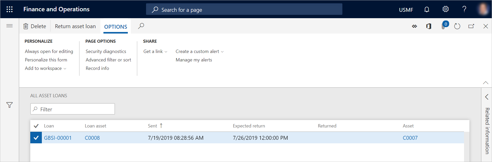

Anlagendarlehen
Important
Dynamics 365 for Finance and Operations hat sich zu speziell entwickelten Anwendungen entwickelt, mit denen Sie bestimmte Geschäftsfunktionen verwalten können. Weitere Informationen zu diesen Änderungen finden Sie im Dynamics 365-Lizenzierungshandbuch.
Wenn Ihr Unternehmen Anlagen für Reparatur- oder Wartungsaufträge von internen Standorten oder Kunden erhält und Sie vorübergehend Anlagen an diese Standorte oder Kunden ausleihen, kann die Anlagenverwaltung die Anlagendarlehen verfolgen.
Anlagendarlehen in einer Wartungsanfrage erfassen
- Wählen Sie Anlagenverwaltung > Allgemein > Wartungsanfragen > Alle Wartungsanfragen oder Aktive Wartungsanfragen aus.
- Wählen Sie die Wartungsanfrage aus, um ein Anlagendarlehen zu erfassen, und wählen Sie dann Bearbeiten.
- Wählen Sie auf der Seite Anforderung die Option Anlagenausleihe senden aus.
- Wählen Sie die Anlage aus, und geben Sie das voraussichtliche Rückgabedatum ein.
- Wählen Sie OK.
Note
- Sie können eine Anlagenausleihe nur senden, wenn eine Anlage des gleichen Anlagentyps verfügbar ist.
- Die Anlage, die Sie ausleihen werden, muss über einen Anlagenlebenszyklusstatus verfügen, der es ermöglicht, dass sie als Ausleiheanlage verwendet werden kann, z. B. Im Lager. Wenn die Anlagenausleihe erfasst ist, wird der Anlagenlebenszyklusstatus der Anlage automatisch aktualisiert, z. B. in In Ausleihe.
Um eine Liste mit allen Anlagen anzuzeigen, die Sie an andere Standorte oder an Kunden ausgeliehen haben, wählen Sie Anlagenverwaltung > Allgemeines > Anlagendarlehen > Alle Anlagendarlehen aus. Wenn das Kontrollkästchen Beendet für eine Anlage aktiviert ist, wurde die Anlage als Ihrem Unternehmen zurückgegeben erfasst.

Auf der Seite Aktive Anlagendarlehen können Sie eine Liste aller Anlagendarlehen anzeigen, die noch nicht an Ihr Unternehmen zurückgegeben wurden.
Anlagendarlehen als zurückgegeben erfassen
- Wählen Sie Anlagenverwaltung > Allgemeines > Anlagendarlehen > Aktive Anlagendarlehen aus.
- Wählen Sie das Anlagendarlehen aus, das als zurückgegeben erfasst werden soll, und wählen Sie dann Anlagendarlehen zurückgeben aus.
- Geben Sie im Feld Zurückgegeben das Datum und die Uhrzeit ein.
- Wählen Sie OK.
- Aktualisieren Sie die Listenseite Aktive Anlagendarlehen. Sie sehen, dass das Anlagendarlehen nicht mehr in der Liste angezeigt wird.